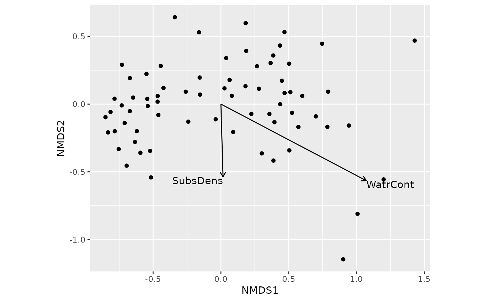

Add Fitted Vectors to Ordination plots
stat_vectorfit.RdFits arrows to show the direction of fastest increase
in continuous environmental variables in ordination space.The
arrows are scaled relative to their correlation coefficient,
and they can be added to an ordination plot with geom_ordi_arrow().
Usage
stat_vectorfit(
mapping = NULL,
data = NULL,
geom = "text",
position = "identity",
na.rm = FALSE,
show.legend = FALSE,
inherit.aes = TRUE,
edata = NULL,
formula = NULL,
arrow.mul = NULL,
...
)Arguments
- mapping
Set of aesthetic mappings created by
aes(). If specified andinherit.aes = TRUE(the default), it is combined with the default mapping at the top level of the plot. You must supplymappingif there is no plot mapping.- data
The data to be displayed in this layer. There are three options:
If
NULL, the default, the data is inherited from the plot data as specified in the call toggplot().A
data.frame, or other object, will override the plot data. All objects will be fortified to produce a data frame. Seefortify()for which variables will be created.A
functionwill be called with a single argument, the plot data. The return value must be adata.frame, and will be used as the layer data. Afunctioncan be created from aformula(e.g.~ head(.x, 10)).- geom
The geometric object to use to display the data for this layer. When using a
stat_*()function to construct a layer, thegeomargument can be used to override the default coupling between stats and geoms. Thegeomargument accepts the following:A
Geomggproto subclass, for exampleGeomPoint.A string naming the geom. To give the geom as a string, strip the function name of the
geom_prefix. For example, to usegeom_point(), give the geom as"point".For more information and other ways to specify the geom, see the layer geom documentation.
- position
A position adjustment to use on the data for this layer. This can be used in various ways, including to prevent overplotting and improving the display. The
positionargument accepts the following:The result of calling a position function, such as
position_jitter(). This method allows for passing extra arguments to the position.A string naming the position adjustment. To give the position as a string, strip the function name of the
position_prefix. For example, to useposition_jitter(), give the position as"jitter".For more information and other ways to specify the position, see the layer position documentation.
- na.rm
Remove missing values (Not Yet Implemented).
- show.legend
logical. Should this layer be included in the legends?
NA, the default, includes if any aesthetics are mapped.FALSEnever includes, andTRUEalways includes. It can also be a named logical vector to finely select the aesthetics to display. To include legend keys for all levels, even when no data exists, useTRUE. IfNA, all levels are shown in legend, but unobserved levels are omitted.- inherit.aes
If
FALSE, overrides the default aesthetics, rather than combining with them. This is most useful for helper functions that define both data and aesthetics and shouldn't inherit behaviour from the default plot specification, e.g.annotation_borders().- edata
Environmental data where the continuous variables are found.
- formula
Formula to select variables from
edata. If missing, all continuos variables ofedataare used.- arrow.mul
Multiplier to arrow length. If missing, the multiplier is selected automatically so that arrows fit the current graph.
- ...
Other arguments passed to the functions.
Value
Returns a ggplot2 layer or a list of such layers: a "LayerInstance"
object that inherits from classes "Layer", "ggproto", and "gg".
Examples
library("vegan")
library("ggplot2")
data(mite, mite.env)
m <- metaMDS(mite, trace = FALSE, trymax = 100)
## add fitted vectors for continuous variables
ordiggplot(m) +
geom_ordi_point("sites") +
geom_ordi_arrow("sites", stat = "vectorfit", edata = mite.env)

## can be faceted
ordiggplot(m) + geom_ordi_point("sites") +
geom_ordi_arrow("sites", stat = "vectorfit", edata = mite.env) +
facet_wrap(mite.env$Topo)